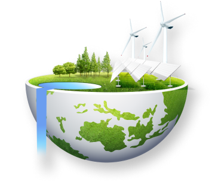
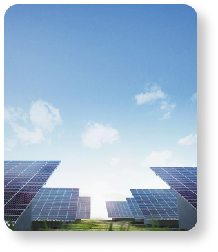
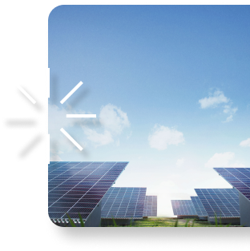

2021 P4G Summit Seoul
MENU기본세션장
5.31
2021 P4G 서울 정상회의 2일차(5.31.(월))에 개최되는 총
5개의 기본세션은
P4G가 중점 추진하는 유엔 2030 지속가능발전목표 (SDGs)
5개 분야(물, 에너지, 식량/농업, 순환경제, 도시)에 대해
논의하는 세션입니다.
P4G 고유의 5개 분야 기본세션은 2018년 덴마크에서 개최된
제1차 P4G 정상회의에서도 개최된 바 있습니다.
P4G 고유의 5개 분야 기본세션은 2018년 덴마크에서 개최된
제1차 P4G 정상회의에서도 개최된 바 있습니다.

기본세션에는 P4G 중점 5개 분야에 대해 주제별 전문성과인지도를 갖춘 정부, 기업, 국제기구 고위급 인사들이참여하여 2시간 30분 동안 해당 주제에대한기조발제 및 패널토의를 진행하게 됩니다.
특별세션과 다르게 기본세션 프로그램에는 P4G
사무국(Hub)가 주도하는 세션(약 40분간 진행)이 포함되어
있습니다. 각각의 기본세션은 5가지 분야에 대한 우리부처의
관점과 P4G 사무국의 관점이 적절히 조화되어 진행될
것입니다.
2021 P4G 서울 정상회의 홈페이지의 "가상회의 플랫폼"을 통해 국내외 일반 국민들께서도 자유롭게 시청하실 수 있습니다.





ⓒPark SangHoon


 VOD
VOD FAVORITE
FAVORITE